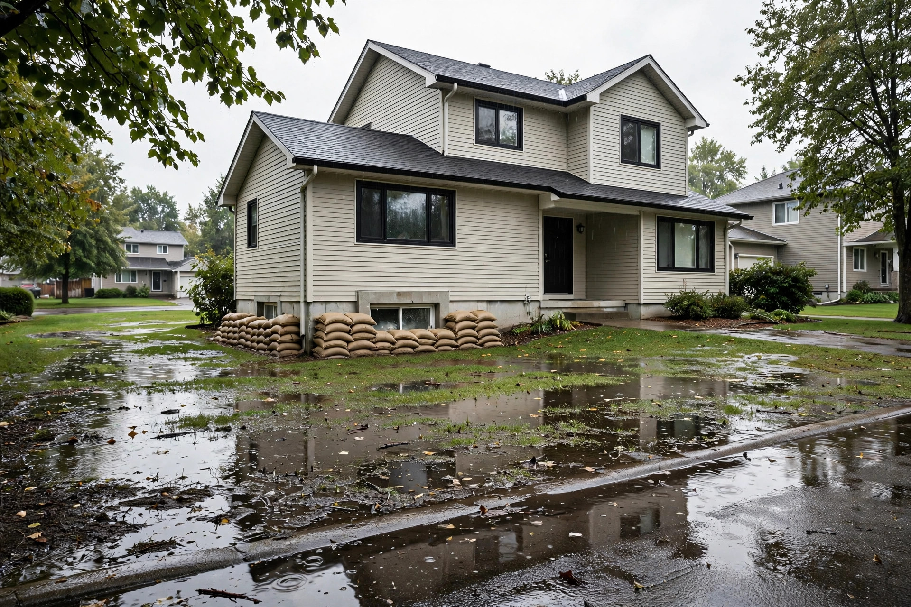

Overland water and flood coverage in Canada, explained

General information only. This guide explains, in general terms, how home insurance in Canada treats different kinds of water damage. It is not insurance advice, it does not recommend buying or declining any coverage, and it quotes no prices, because prices and eligibility depend on the individual property and insurer. Policy wording varies by insurer and province, and your own policy document is the final word for your situation.
The word "flood" hides five different problems
Ask a room of homeowners whether their policy covers "flooding" and most answers will be guesses — not because homeowners are careless, but because everyday language uses one word for events that insurance treats as entirely separate problems. Water that escapes from a burst pipe inside the house, water that reverses up through a sewer drain, water that flows across the ground and in through a basement window, water that seeps slowly through a foundation, and seawater pushed ashore by a storm can all leave the same soaked basement carpet. They do not leave the same claim. The Insurance Bureau of Canada (IBC) states the core fact plainly in its flood guidance: sewer backup damage is covered only if specific, optional sewer backup coverage has been purchased, and overland flood damage is covered only if specific, optional overland flood coverage has been purchased. Everything else in this guide follows from learning to sort water by where it came from before asking whether it is covered.
The five kinds of water, sorted by where it came from
| Kind of water | What it means | How a standard policy generally treats it |
|---|---|---|
| Sudden indoor discharge | Water escaping suddenly and accidentally from inside the home's systems — a burst pipe or a failed appliance hose are the classic examples | Generally the kind of sudden water damage a standard policy is built to respond to, subject to the policy's wording, exclusions, and the requirement that the event be sudden rather than a long-running leak |
| Sewer backup | Water or sewage entering the home because the sewer or drainage system backs up and reverses into the house, often during heavy rain | Not covered by the standard policy on its own, per IBC: covered only if specific, optional sewer backup coverage has been purchased |
| Overland water | Fresh water flowing over the ground from outside — a river or other body of water overflowing onto dry land, or heavy surface water — and entering the home through windows, doors, or other openings | Not covered by the standard policy on its own, per IBC: covered only if specific, optional overland flood coverage has been purchased, and that coverage may not be available for homes in a known flood plain |
| Groundwater and gradual seepage | Water rising below ground or working its way through foundations and walls slowly, over time | Generally treated as a maintenance and gradual-damage problem rather than a sudden insured event; readers should not assume any endorsement turns long-term seepage into a covered loss — the policy wording governs |
| Coastal flooding and storm surge | Seawater driven ashore by a storm, tides, or waves | Per IBC, home and business insurance policies generally do not cover damage caused by coastal flooding and/or storm surge |
Two cautions about the table. First, insurers define these terms in their own wording, and the boundaries differ — one insurer's water package may bundle categories that another sells separately, and some combine sewer backup, overland water, and groundwater elements in a single endorsement. Second, a single storm can produce more than one kind of water at once: rain can pool against the foundation while the sewer backs up, and which coverage responds can depend on which water caused which damage. That is a question for the adjuster and the wording, not for a general guide.
What a standard policy does — and the wind exception worth knowing
The base policy is not empty on water; it is narrow. Sudden and accidental discharge from the home's own systems is the water risk the standard policy generally contemplates. IBC's flood guidance adds a second point that surprises people in the other direction: damage to homes caused by wind is usually covered, including damage caused by flying debris or falling branches or trees, and damage caused by water entering through openings — that is, openings created by the wind event itself. Rain that enters through a window left open, or through a roof that has simply worn out, is a different fact pattern from rain that enters through a hole a storm just tore in the roof, and policies treat them differently. The lesson is not "wind water is covered" but "the cause and the pathway both matter, and both are in the wording."
IBC also notes that, in certain circumstances, homeowners who cannot return home because of insured damage are entitled to additional living expenses. Note the qualifier: living-expense coverage follows an insured loss. If the water event itself is not covered, the hotel bill that follows from it is generally not covered either — one more reason the sorting exercise above matters more than any single coverage in isolation.
Optional coverage: what the endorsements are, in general terms
An endorsement is an addition to the base policy that changes what it covers, for an additional premium. For water, the two long-standing optional additions are sewer backup coverage and overland flood coverage, each responding to its own kind of water as defined in the endorsement. Neither is a promise to pay for every wet basement: each carries its own limit, its own deductible in some cases, and its own exclusions, and a claim still has to fit the endorsement's definition of the event. Some insurers now package water protections together rather than selling them separately; the package names are marketing, and the definitions inside the wording are what count. This guide deliberately gives no prices and no "you should buy this" direction: the premium for the same endorsement varies widely with the property's location and risk, and whether it represents good value for a particular household is a decision for that household with its own information, not for a general-information page.
Availability: the flood-plain limit and high-risk homes
Optional does not mean universally available. IBC states that if you live in a known flood plain, overland flood coverage may not be available at all. The context is scale: IBC describes flooding as Canada's greatest climate-related risk, with more than 1.5 million households across the country highly exposed to flooding. For the highest-risk properties, the private market's answer has historically sometimes been "no," or a price that functions as a no. That gap is a matter of public policy, not just shopping technique, which leads to the next section.
The national flood insurance program: announced, not yet a purchasable policy
The federal government has been developing Canada's first low-cost national flood insurance program for households at high risk of flooding, in partnership with property and casualty insurers. IBC's response to Budget 2024 described that budget as another step toward the partnership, said the program would help ensure the more than 1.5 million homeowners at high risk of flooding have access to affordable insurance when it is launched, and noted that the industry and the federal government had begun work to scale and deliver it — while also noting that the needed conversations between the federal and provincial governments had yet to take place and that a federal-provincial funding arrangement was still required. The general-information takeaway is narrow and important: as described in those public statements, this is a program in development, not a policy a homeowner can buy today, and it is not a reason to assume a high-risk property is or will be covered. Anyone whose plans depend on the program should check its current status with official federal sources and with their insurance representative rather than relying on summaries, including this one.
Prevention is separate from coverage
Coverage decides who pays after water gets in; prevention decides whether it gets in at all, and the two must never be confused — a well-maintained home can still have an uncovered loss, and a covered loss is still a miserable month. IBC's published steps for reducing water damage include: keep floor drains clear and consider installing a backwater valve where possible; make sure downspouts are clear and direct water away from the home; move valuable items out of the basement to higher levels; if there is a sump pump, confirm it works and has a backup power source; have someone check the property during absences; during heavy rainfall, limit in-home water use from appliances such as dishwashers and clothes washers; consider rain barrels to hold and manage excess rainwater; and, well in advance and with professional help, raise large appliances, electrical panels, the furnace, and the hot water heater off the basement floor on blocks. If flooding is imminent, IBC advises shutting off electricity to affected areas where that applies, and using sandbags or flood shields at basement windows and doors.
Questions to ask about your own policy
Use this framework with your declarations page and wording in hand — it produces questions, not answers, which is the honest output of a general guide:
- Sort first. For each kind of water in the table above, ask: does my policy respond to this as part of the base policy, under an endorsement I have actually purchased, or not at all?
- Find the endorsement by name. If sewer backup or overland coverage is listed, find its limit and any separate deductible. A limit far below the value of a finished basement and its contents is information worth having before a loss, not after.
- Check the availability answer for your address. If overland coverage is absent, ask whether it was declined, not offered for the property's location, or simply never added — the three answers lead to different next conversations.
- Separate prevention from paper. List the prevention steps your home already has (backwater valve, sump pump, grading, downspout direction) apart from the coverage list, so neither list flatters the other.
- Confirm in writing. Coverage summaries from any source, including this site, are not the contract. The wording is.
The Financial Consumer Agency of Canada publishes neutral consumer guidance on home, condo, and tenant insurance, including how premiums are set and how claims work — a useful companion read before speaking with an insurer or broker.
FAQ
Does a standard Canadian home policy cover flooding? For overland flooding and sewer backup, IBC's answer is that each is covered only if the specific optional coverage has been purchased. Coastal flooding and storm surge are generally not covered. Sudden indoor water discharge is a different category and is the kind of water damage a standard policy generally contemplates, subject to its wording.
Are sewer backup and overland water the same coverage? No — they respond to water arriving by different routes, and historically they have been sold as separate optional coverages, although some insurers now bundle water protections into packages. The definitions in the wording decide any given claim.
Can every homeowner buy overland flood coverage? No. IBC notes it may not be available for homes in a known flood plain. Availability and price depend on the property's risk as the insurer assesses it.
Is the national flood insurance program something that can be bought now? Based on the public statements described above, it is a program in development aimed at high-risk households, with federal-provincial arrangements still outstanding at the time of those statements. Check official federal sources for its current status.
After a flood, what comes first? Safety first; then documentation. IBC advises documenting damage thoroughly, with an inventory of lost or damaged items, photos or video, and supporting receipts and documents, and contacting the insurer to report the loss and confirm what the policy includes.
The short version
- Sort water by source: sudden indoor discharge, sewer backup, overland water, groundwater or seepage, and storm surge are five different claim stories.
- Per IBC, sewer backup and overland flood damage are each covered only if the specific optional coverage was purchased.
- Coastal flooding and storm surge are generally not covered; gradual seepage is a maintenance problem, not a sudden insured event.
- Overland coverage may be unavailable in a known flood plain; the federal low-cost program for high-risk homes is in development, not a purchasable policy.
- Keep prevention and coverage on separate lists — and confirm everything against your own wording.
General information only — not insurance or financial advice. Water coverage definitions, limits, and availability vary by insurer, property, and province. Talk to a licensed insurance professional about your specific situation, and treat your own policy document as the final word.
Keep readingNext: Home liability coverage basics →